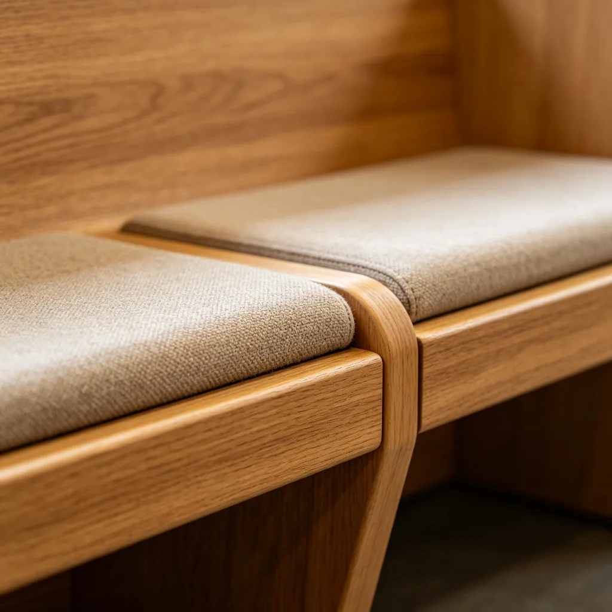

在一個陽光明媚的午後，一隻美國短毛貓坐在花園的草地上，鼻子幾乎貼到了一隻停在花朵上的蝴蝶。貓咪的眼睛睜得大大的，充滿了好奇，而蝴蝶似乎也不害怕，安靜地停在那裡，彷彿在和貓咪進行一場神秘的對話。這個畫面既溫馨又有趣，完美地捕捉到了貓咪最可愛的特質——無窮無盡的好奇心。
貓咪的好奇心：生存的本能
貓咪的好奇心不是無緣無故的——它是千萬年演化的產物，是貓咪作為狩獵者的生存本能。在野外，貓咪需要不斷探索周圍的環境，尋找食物、躲避天敵、尋找合適的棲息地。任何新的事物、新的聲音、新的氣味都可能意味著機會或危險，因此貓咪發展出了強烈的好奇心來驅動牠們不斷探索和學習。
家養的貓咪雖然不需要為生存發愁，但這種好奇心仍然深深地刻在基因裡。這就是為什麼貓咪總是對新事物充滿興趣——一個新打開的紙箱、一個掉在地上的橡皮筋、窗外飛過的小鳥、甚至你剛買回來的購物袋，都能讓貓咪興奮半天。對貓咪來說，世界就是一個巨大的游樂場，每一個角落都值得探索。

好奇心對貓咪的好處
好奇心不僅讓貓咪的生活更加有趣，對牠們的身心健康也有很多好處：
- 認知刺激：探索新事物可以刺激貓咪的大腦，促進認知能力的發展，預防老年認知障礙。研究顯示，生活在豐富環境中的貓咪，大腦皮層更厚，神經連接更多，學習能力更強。
- 減少焦慮：好奇心強的貓咪通常更自信、更適應環境變化。當貓咪主動探索新事物時，牠們會發現「原來這個東西不可怕」，從而減少對未知事物的恐懼和焦慮。
- 增加運動量：探索和玩耍可以讓貓咪得到身體鍛煉，預防肥胖和相關健康問題。一隻好奇心強的貓咪，每天的活動量通常比懶惰的貓咪大得多。
- 加深與主人的紐帶：和主人一起探索新事物（如新玩具、新遊戲）可以加強貓咪與主人的情感紐帶。當貓咪在探索過程中遇到困難時，主人的引導和鼓勵可以讓貓咪更加信任主人。
如何保護和培養貓咪的好奇心
雖然好奇心是貓咪的天性，但我們可以透過一些方法來保護和培養貓咪的好奇心：
提供豐富的環境：在家中設置各種各樣的貓咪設施——貓爬架、貓隧道、貓窩、窗台觀景台，讓貓咪有足夠的空間和設施來探索和玩耍。定期更換玩具的位置和種類，保持環境的新鮮感。

引入新事物時要循序漸進：當給貓咪引入新事物（如新玩具、新家具、新家庭成員）時，要給貓咪足夠的時間來適應。不要強行把貓咪拉到新事物面前，而是讓貓咪自己決定什麼時候去探索。可以在新事物旁邊放一些貓咪喜歡的零食，引導貓咪主動接近。
不要懲罰貓咪的探索行為：有時候貓咪的好奇心會導致一些「麻煩」——比如打翻東西、鑽進不該鑽的地方、咬壞物品。在這種情況下，不要懲罰貓咪，因為懲罰會讓貓咪變得膽小和焦慮，抑制牠們的好奇心。相反，應該用正向引導的方式——把不該碰的東西收好，提供合適的替代品，獎勵貓咪在正確的地方探索和玩耍。
確保探索環境的安全：「好奇害死貓」這句話雖然是誇張，但也提醒我們要注意貓咪探索環境的安全。要把有毒物品、小物品、電線等危險東西收好，確保貓咪在探索過程中不會受傷。
貓咪的「蝴蝶反應」
很多貓咪看到飛行的小昆蟲（如蝴蝶、蒼蠅、飛蛾）時都會表現出極大的興奮——牠們會緊盯著昆蟲，發出輕微的「嘎嘎」聲（稱為「chattering」），有時還會突然跳起來試圖捕捉。這種行為源於貓咪的狩獵本能——飛行的小昆蟲是貓咪在野外的天然獵物之一。雖然家養貓咪通常不需要靠狩獵為生，但這種本能仍然存在。和貓咪一起玩「逗貓棒」（模仿小鳥或昆蟲的飛行）是滿足貓咪狩獵本能的好方法。
花園裡與蝴蝶「親吻」的美短，用牠的好奇和溫柔，為我們展示了貓咪最可愛的一面。好奇心是貓咪與生俱來的禮物，它讓貓咪的生活充滿了驚喜和樂趣，也讓我們在觀察貓咪的過程中重新發現了世界的奇妙。或許，我們都可以從貓咪身上學到一點——保持一顆好奇心，用新的眼光看待熟悉的世界，生活就會變得更加有趣。